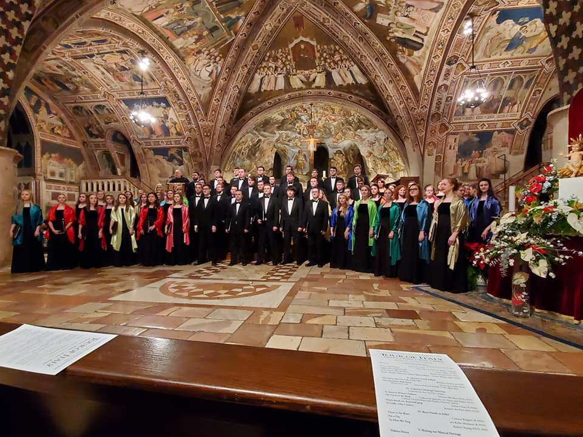

One of Gunnar’s major achievements in life was touring Italy with his college concert choir back in early 2020.
Now, he keeps that passion for music alive by performing as part of the Rainbow Chorus of Sioux Falls.

Upon finishing his counseling degree, he hopes to help LGBT youth with hopes of opening his own counseling practice someday.